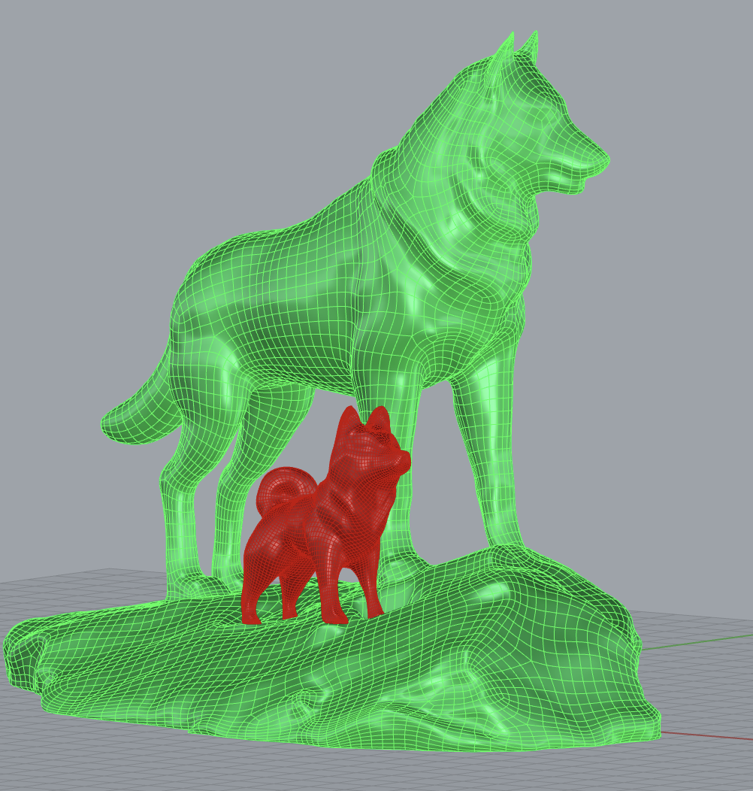
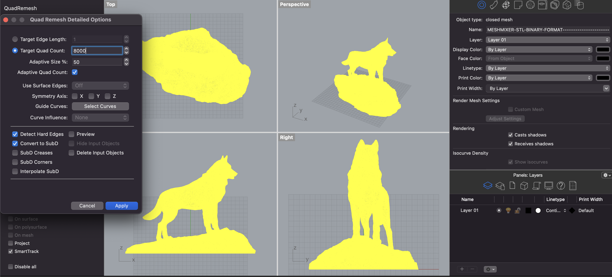
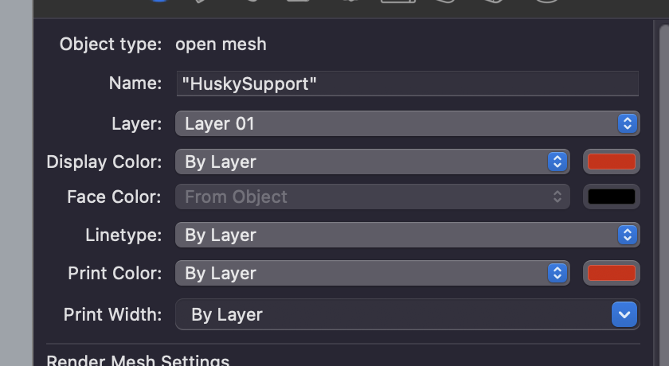
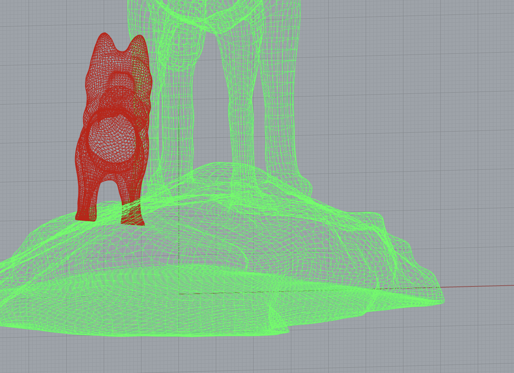
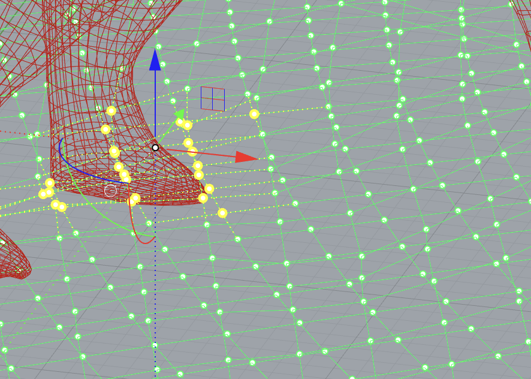

A5-Part One: Getting Meshy! and Lamps!
by Kefeng Wang in HCDE598

This is the view of the project in the Rhino:
The bigger husky is already a closed mesh, so I have not done anything special. I have used the command line "QuadRemesh" to change the STL model from triangulateMesh. I also reduced the mesh amount from 278,636 polygons to 8000 target quad count. Even though this change makes the model lose a lot of details, there would be so many details when printing it out.
The smaller husky is open mesh after I checked it out in the Rhino. The first step I took was to reduce the mesh amount from 60K+ to 20000. I also used the "QuadRemesh" command to change the mesh type. The open mesh is closed after reducing.
Now I have imported two huskies into my Rhino file; even one of them is more like the wolf. However, there was still one problem I noticed. The bigger husky model comes with a rock which is not very smooth. So the small husky is very difficult to stand on it. The image below is a screenshot of how two huskies look from the front of the view. The smaller husky is not actually standing on the rock but "standing in the rock".
So in order to solve this problem, I used the "PointOn" command to move points around the dog foot of the smaller one. So the height of these points could be lower than the points of the dog's foot, which I believe could make the smaller husky standing in a much more normal way.
 Here is all the documentation for assignment 5 Part One!